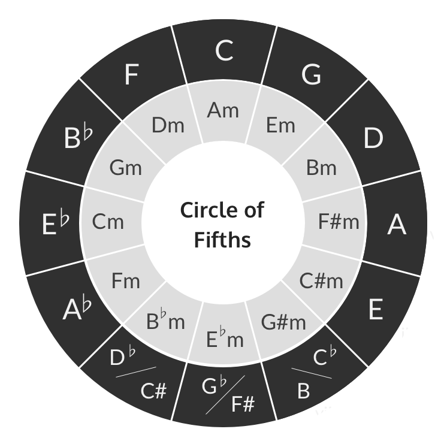

Overview: This project began with iReal Pro, an app that plays accompanying instruments over chords, allowing musicians such as myself to practice playing and improvising. However, since the app provides specific chords in a singular key, I naturally “lock in” to the key-specific chords. This means that playing the song in other keys becomes a challenge, as chords themselves are relative to a key.
To solve this, I turned to Roman Numeral Analysis (RNA). Instead of looking at chords based on the notes they are made of, I look at them as a number in relation to the key of the song. Doing so allows me to notice common chord progressions (like the ii-V-I). Also, RNA transcends key signatures–it’s constant regardless of key. Therefore, it’s optimal to practice with these roman numerals, as I can apply phrases and transitions to any key.
In this project, I used Python and Arduino to turn jazz chord changes into roman numerals and then, in time, display them on a LCD Display. Using this machine, I can practice numerous songs, following the roman numerals instead of iReal Pro’s chord changes.
Since the roman numerals appear in time with the song, users can choose the bpm (or beats per minute) to practice in. Along with displaying correct chordal qualities (for example, major versus minor and dominant versus diminished), this machine also supports chord alterations and additions like added ninths or thirteenths.
iReal Pro encodes musical data via the Extensible Markup Language (XML). Information regarding chord roots, qualities, durations, etc. are all stored under unique tags.
I created a Python script to scrape the relevant chordal information from the XML files and coded an algorithm that analyzed the chords and converted the song's progression
into RNA.
I used Arduino and an LCD Screen to display the roman numerals in time. To facilitate communication between the Arduino and the Python script, I utilized the Serial Port to
transfer information.
Using the XML Element Tree Python module, I traversed through the relevant song's XML file, extracting tags such as <root-step> (root notes) and <root-alter> (alterations/additions).
iRealPro codifies half steps as either "-1" or "+1", with the sign indicating the direction. I also intended to keep everything in terms of flats to make chords easier to handle. This meant
implementing a small "algorithm" for calculating enharmonics. This algorithm works as illustrated in the following example:
F (+1) → [Interpreted as F#] → Gb
Extracting the correct key was a challenge. In the XML file, it is codified by a number followed by either "major" or "minor". After lots of pondering, I realized it had to do with the Circle of Fifths (COF). The "major"/"minor" determines which COF it is (there are separate major/minor ones), and the number represents how far from the top to travel, with positive being clockwise and negative being counter-clockwise.
Image Source: Applied Guitar Theory
Referring to the COF shown above, if the XML file says [4 / major], we choose the outer ring (the major COF) and "move" clockwise four spaces starting from the top (C). This means that the key of the song is
E major.
Once I extracted the key of the song, I created a corresponding Scale object using the Python music21 library. With this, I iterated through the chords (i.e. parsed through the harmony tags in the XML file) and used
the Scale object to determine each chord's corresponding roman numeral. I also pulled out alteration/addition information and used it to modify the roman numerals to properly display full chordal qualities, such as
added 9ths or 13ths. Additionally, diminished chords were codified as Minor 7th chords with an altered 5th (lowered 5th); instead of displaying a "min 7th (-5)", my algorithm detected it as a diminished chord and
correctly displayed the ⌀ symbol instead. However, since Python couldn't properly pass the symbol to the Arduino, I created a custom display for the character using a byte array.
Script snippet illustrating the implementation of the Serial Library.
To send information to the Arduino, I used the Serial Python library to communicate via the Serial Port. The roman numerals are stored in a list; the script iterates through this list and, in time, sends the String of the roman numeral into the serial port. Since raw Strings cannot be passed into the port, they must first be encoded–in this project, I encoded them in ASCII.
My Arduino circuit involves a simple 16x2 LCD Display connected to the Arduino UNO board through a potentiometer. In my code, I start by initializing the Serial Port connection and the LCD display.
In the loop sequence, the Arduino awaits a Serial Port input; upon reception it prints the data on the screen. Since the Python script implements the time-based delay, no further delays were implemented
in the Arduino script. As mentioned before, since the "o-slash" character cannot naturally be printed on the LCD Display, I created a custom byte array to handle this case.
One issue I ran into was that the circuit guide I followed used Pin 1 on the UNO board. However, the Serial Port uses Pins 0/1, so I had to re-wire the circuit and update my code accordingly. Another major
issue I faced was getting the Python script and Arduino to communicate. After much frustration, I figured out that the script needed a delay between registering the Serial Port (as highlighted in a previous
code snippet) and actually sending a message. In other words, I simply had to implement a sleep command to allow time for the Serial Port communication to initialize. Surprisingly, it needed specifically 2
seconds to work; 1 second was not sufficient.